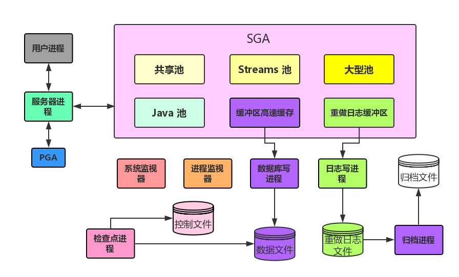

HELLO,
MY NAME IS XuJianGuo AND THIS IS MY BLOG
Oracle体系结构
总览
个人觉得面试的时候如果有人问你Oracle的时候，多多少少都会涉及到它的体系结构，就像问你JVM，就会涉及到内存模型一样。所以这里总体一下，从整体把握去叙说整个结构，理清了结构体系，对一些深入的点才能有深刻的体会。
数据库文件
其实什么是数据库，在我看来数据库就是存储在磁盘的有组织有结构的文件，Oracle数据库中分成了很多类文件，这里我介绍四类比较重要的文件。
数据文件。没错，这个数据文件就是存储了用户数据，就是平常我们操作的表中的数据，这类文件在磁盘中以dbf后缀结尾，我们在创建表空间的时候后面通常都是有一个datafile文件，这个文件就是数据文件。
控制文件。这个文件存储了物理数据库的结构信息。一般我们都是首先通过访问控制文件再来访问数据文件，如果是控制文件出现问题了，数据文件也就不能访问了。控制文件存储的是一些比较宏观的信息，如当前使用的是哪个数据库实例，操作的哪个表空间等等，这类文件在磁盘中以ctl后缀结尾。
重做日志文件。这类文件很明显就是记录重做日志，在磁盘中以log后缀结尾。在数据库突然崩溃需要恢复的时候，重做日志就可以帮到你。
归档文件。在重做日志文件中，是有限制大小的。假如我们将重做日志文件分成A/B/C三个组，A组写满了写B组，B组写满了写C组，C组写满了写A，这是一个循环的过程，所以会有以前的日志会被覆盖的问题，如果你想保存这些日志怎么办？归档文件就是说这个事的，将日志进行统计归档，所以即使覆盖了，归档文件里面还有记录，可以恢复以前的数据。
SGA
SGA就是系统共享区。是所有前台进程和后台进程的共享数据的区域。在我们用startup命令启动数据库后，就会在系统的共享区中划分出一块区域作为SGA，我们一起来看看这个过程：
在没有启动数据库之前，共享区/信号量/消息队列都是没有消耗的。
[oracle@redhat4 ~]$ ipcs
------ Shared Memory Segments --------
key shmid owner perms bytes nattch status
------ Semaphore Arrays --------
key semid owner perms nsems
------ Message Queues --------
key msqid owner perms used-bytes messages
启动数据库：
SQL> startup
ORACLE instance started.
Total System Global Area 285212672 bytes
Fixed Size 2020192 bytes
Variable Size 109055136 bytes
Database Buffers 167772160 bytes
Redo Buffers 6365184 bytes
Database mounted.
Database opened.
此时的发生变化了：
[oracle@redhat4 ~]$ ipcs
------ Shared Memory Segments --------
key shmid owner perms bytes nattch status
0x36010028 327688 oracle 640 287309824 22
------ Semaphore Arrays --------
key semid owner perms nsems
0x7df2e688 98304 oracle 640 154
------ Message Queues --------
key msqid owner perms used-bytes messages
启动数据库后，开辟了一个大约287M的SGA共享区，这个共享区主要是为进程服务。SGA里面按照按照各自的功能又分为6大区域，下面我们介绍一下：
共享池。我们熟称Shared Pool，这个区域存放的而是可以在用户之间共享的各个结构。我们都直到Oracle接收了一条SQL之间，需要解释称执行计划才被执行的。如果一条语句别执行很多次，那么每次都需要消耗CPU去解析吗？不是的，Oracle在它第一次解释后会将SQL和对应的执行计划缓存，下次直接命中就不用解释了，这个SQL和执行计划就是放在共享池中，A用户和B用户都可以使用这个结构。
Streams池。这个我也不是不太清除，以后补充。
大型池。是一个可选区域,可为某些大型进程(如Oracle备份和恢复操作、I/O服务进程)提供大量内存分配.
Java池。用于Java虚拟机(JVM)中所有特定会话的Java代码和数据。
缓冲区高速缓存。这个就是我们天天叫的Buffered Cache，当我们的服务器进程跟用户进程进行通信的时候，加入用户进程请求一条SQL，首先我们到共享池进行匹配，加入找不到，就进行解析，假设我们需要拿到xujianguo这个表的所有数据，怎么拿呢？Oracle会把xujianguo的数据从磁盘的数据文件中加载到Buffered Cache中，服务器进程再从Buffered Cache中获取对应的数据。这是假设在Buffered Cache中没有xujianguo表的数据，假如之前缓存了就可以直接获取。简单的说Buffered Cache就是数据的存储区，与数据文件进行数据交互。
重做日志缓冲区。服务器进程执行操作的时候，会产生重做日志，这些重做日志就是首先存放在日志缓存区中，最后再同步到重做日志文件中。所以这是一个重做日志的专属区域。
前台进程
我们所说的前台进程，其实就是服务器进程。服务器进程的主要作用是一座连接的桥梁，跟用户进程通信，捕获用户有什么请求，然后跟数据库实例通信，获取对应的响应，这里主要是SGA和后台进程。当我们的用户连接到数据库的时候，Oracle就会创建一个服务器进程与它通信，所以你有N次连接，即使创建N个服务进程，下面我连接了两次，所以就有两个相同名字但不同pid的服务器进程：
[oracle@redhat4 ~]$ ps -ef|grep oracle
root 12433 12148 0 16:15 pts/1 00:00:00 su - oracle
oracle 12434 12433 0 16:15 pts/1 00:00:00 -bash
oracle 12632 1 0 16:18 ? 00:00:00 ora_pmon_xujianguo
oracle 12634 1 0 16:18 ? 00:00:00 ora_psp0_xujianguo
oracle 12636 1 0 16:18 ? 00:00:00 ora_mman_xujianguo
oracle 12638 1 0 16:18 ? 00:00:00 ora_dbw0_xujianguo
oracle 12640 1 0 16:18 ? 00:00:00 ora_lgwr_xujianguo
oracle 12642 1 0 16:18 ? 00:00:00 ora_ckpt_xujianguo
oracle 12644 1 0 16:18 ? 00:00:00 ora_smon_xujianguo
oracle 12646 1 0 16:18 ? 00:00:00 ora_reco_xujianguo
oracle 12648 1 0 16:18 ? 00:00:00 ora_cjq0_xujianguo
oracle 12650 1 0 16:18 ? 00:00:01 ora_mmon_xujianguo
oracle 12652 1 0 16:18 ? 00:00:00 ora_mmnl_xujianguo
oracle 12654 1 0 16:18 ? 00:00:00 ora_d000_xujianguo
oracle 12656 1 0 16:18 ? 00:00:00 ora_s000_xujianguo
oracle 12664 1 0 16:18 ? 00:00:00 ora_qmnc_xujianguo
oracle 12704 1 0 16:18 ? 00:00:00 ora_q000_xujianguo
oracle 12706 1 0 16:18 ? 00:00:00 ora_q001_xujianguo
root 15107 15091 0 16:59 pts/3 00:00:00 su - oracle
oracle 15108 15107 0 16:59 pts/3 00:00:00 -bash
oracle 15134 15108 0 16:59 pts/3 00:00:00 sqlplus
oracle 15163 15134 0 16:59 ? 00:00:00 oraclexujianguo (DESCRIPTION=(LOCAL=YES)(ADDRESS=(PROTOCOL=beq)))
oracle 15165 1 0 16:59 ? 00:00:00 ora_j000_jiagulun
root 15166 15074 0 16:59 pts/2 00:00:00 su - oracle
oracle 15167 15166 0 16:59 pts/2 00:00:00 -bash
oracle 15193 15167 0 16:59 pts/2 00:00:00 sqlplus
oracle 15194 15193 2 16:59 ? 00:00:00 oraclexujianguo (DESCRIPTION=(LOCAL=YES)(ADDRESS=(PROTOCOL=beq)))
oracle 15195 12434 0 16:59 pts/1 00:00:00 ps -ef
oracle 15196 12434 0 16:59 pts/1 00:00:00 grep oracle
我们从大图上可以看到服务器进程还有附带一个PGA的区域的。
程序全局区(PGA)是包含每一个服务器进程的数据及控制信息的内存区。Oracle服务器进程为客户机的请求提供服务。每一个服务器进程都有自己专用的PGA,这个PGA是在服务器进程启动时创建的。由该服务器进程独占对PGA的访问,PGA只由对它自身执行操作的Oracle代码读写。
后台进程
后台进程就是默默在后台进程贡献，不像前台进程这样跟用户打交道，Oracle里面有几种后台进程，我们来了解一下：
系统监视器（SMON）。这个进程的主要作用是在系统出现故障的时候，根据故障的状态信息来采用一些策略恢复任务。这个线程即使一个保障线程。
进程监视器（PMON）。我们会发现一个问题，就是很多个连接过来，Oracle创建很多服务器进程，当中有些服务器进程挂掉了怎么办，它自己不能处理啊。所以这个时候就出现了进程监视器，监控进程的状态，当发现挂掉或者与用户断开连接后，就将进程进行处理，腾出空间。
数据库写进程（DBWn）。我们都知道Buffered Cache存储了数据，假设服务器进程对数据进行了修改，如执行了一些update操作，那些这些数据怎么同步到数据文件中呢。数据库写进程的魅力就在这里了，会自动检查数据库中的脏数据，然后写到数据文件中，保持两者的同步。
日志写进程（LGWR）。跟数据库写进程的只能一样，只不过针对的对象是重写日志。
归档进程（ARCn）。发生日志切换的时候，也就是日志组都写满的时候，将重做日志写到归档文件中。
检查点（CKPT）。通过更新数据库的所有数据文件和控制文件指出最新的检查点，检查点的存在，就像一个时间点，我们干的活到了哪个时间点。检查点后移就证明前面的事务都完成同步了。